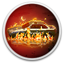
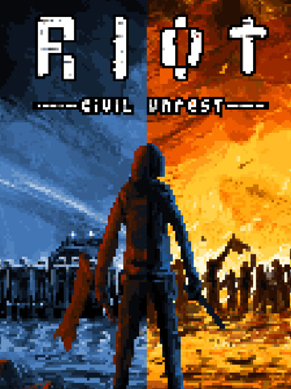

 RIOT - Civil Unrest
Details
|  | |
| Playtime | Not Played |
| Last Activity | Never |
| Added | 12/3/2024 3:03:48 |
| Modified | 4/11/2025 20:24:35 |
| Completion Status | Not Played |
| Library | Gog |
| Source | GOG |
| Platform | GOG |
| Release Date | 2/6/2019 |
| Community Score | 47 |
| Critic Score | 55 |
| User Score | |
| Genre | Indie Simulation Strategy |
| Developer | IV Productions Leonard Menchiari |
| Publisher | Merge Games |
| Feature | Co-Operative Multiplayer Single-Player |
| Links | Official Steam GOG Twitch |
| Tag | 2D Crime Historical Modern Multiplayer Pixel Graphics RTS Simulation Strategy Violent |
Description

RIOT: Civil Unrest is a unique, thought-provoking experience that places you at the heart of some of the world’s most recent confrontations. Campaigns include: Indignados (Spain), Arab Spring (Egypt), Keratea (Greece) and NoTAV (Italy). Over thirty single level scenarios include: Gilets Jaunes protests in Paris, France; Financial reform protests in Buenos Aires, Argentina; Economic protests in Caracas, Venezuela; and the G20 Rote Flora clashes in Hamburg, Germany.
RIOT: Civil Unrest is a complex strategy game that sets players objectives for each scenario. It’s then up to the individual to choose how to tackle each situation, employing different strategies and tactics in order to achieve the perfect outcome. Discover if you can dispel an angry crowd or overcome a well-equipped militia with RIOT: Civil Unrest. Player performance is rated, aggression can lead to a quick, successful outcome but a softer approach may have the same resolution without damaging public opinion.
RIOT: Civil Unrest now boasts a powerful, Steam Workshop Editor that allows users to create and share their own scenarios too.
RIOT – Civil Unrest’s creator, Leonard Menchiari, experienced rioting first-hand at the NoTAV protests in Italy. He created the game to tell the stories and express the feelings experienced during these clashes. What triggers the crowd to behave with such anger and aggression? Often outnumbered, what does a police officer feel like during the conflict? RIOT – Civil Unrest presents the player with the opportunity to experience both sides of the fight - a fight in which there really are no winners. Who is right and who is wrong? Experience RIOT – Civil Unrest and draw your own conclusions.

Play as the Police
- Employ numerous crowd-control tactics, both passive and aggressive.
- Command Assault, Tactical, and Ballistic squads.
- Call in police trucks, water cannon or even a tank!
- Choose whether to use smoke grenades, rubber and plastic bullets or even live ammunition.
Play as the Rioters
- Instruct Rioters (armed and passive) and Journalists.
- Incite rage and cause the masses to act aggressively or try to calm the situation with tactical crowd reformation and retreats.
- Attack authority with Molotov cocktails, fireworks, paper-bombs, rocks, street furniture and the power of the media.

Multiple Modes
- Sixteen campaign levels split over four scenarios; Keratea (Greece), NoTAV (Italy), Indignados (Spain) and Arab Spring (Egypt).
- See the story unfold from both sides - play all thirty-two levels as the Rioters or the Police.
- Single player mode - play against the computer AI.
- Versus mode – play with or against a friend or AI on the same computer.
Create your own Riots with the level editor
- Name your riot, create a description of the event and add many other details (where, when, links etc.).
- Add your own background images.
- Place and edit sprites from a library with more than 700 objects.
- Add lighting and weather effects, vehicles, particles effects and filters.
- Customise the characters skins, clothes and gears.
- Set your own gameplay rules defining the rebels and police teams and their objectives.
- Share your levels on Steam Workshop!